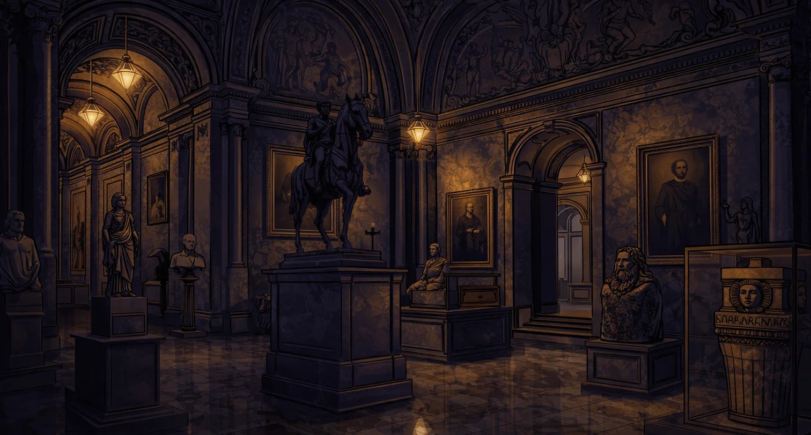

LEVEL
TUTORIAL



Während einer exklusiven Abendführung im Museum geschieht das Unfassbare: Das berühmte Gemälde „Diadora“ verschwindet spurlos. Die Alarmanlage wurde manipuliert, alle Ausgänge waren kurzzeitig blockiert – der Täter ist noch im Gebäude. Spannung liegt in der Luft, und jeder könnte schuldig sein…
Fünf Personen geraten ins Visier: die wissende Kunsthistorikerin, der kontrollierende Sicherheitschef, ein auffälliger Besucher, die erfahrene Restauratorin und der Technikmitarbeiter mit Zugriff auf die Systeme. Jeder hat ein Motiv – und etwas zu verbergen. Wem kannst du trauen?
Sammle Hinweise, kombiniere Beweise und triff eine folgenschwere Wahl: Du musst zwei Verdächtige eingrenzen – doch nur einer ist wirklich schuldig. Entlarve den Täter, bevor er entkommt… oder beschuldigst du am Ende die falsche Person?
STORY


fsajflhsfhosdaf
sdjfhadshfpuafd


↓

- Kaputte Uhr
- Foto
- ...